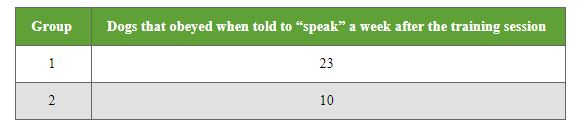
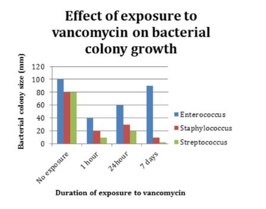

Question 1
Scientists performed an experiment to determine whether there is a connection between learning ability and food. They took two groups of 25 dogs each, all from the same breed and between the ages of 8 and 10 months old. Both groups of dogs were deprived of food for 1 day and then given a customary training session to learn a new (never before encountered) trick – to “speak” or bark on command. Immediately after each successful “speak”, Group 1 was fed a piece of kibble, but Group 2 was not (they were told “Good dog” and continued being trained). A week later, all of the dogs were tested to see whether they could remember to “speak” on command. The results can be seen in the following table
Question 2
Every material has a property known as specific heat capacity. Specific heat capacity is the amount of heat that is required to raise the temperature of that material by a certain amount. Materials that have a low specific heat capacity heat up very quickly, whereas materials that have a high specific heat capacity heat up more slowly.
It can be calculated by using the following equation:
c=qm⋅ΔT
where q represents the amount of heat (in joules), m represents the mass of the substance (in grams), and ΔT represents the change in temperature.
Jada is asked to identify a certain material by it’s specific heat capacity. She performs an experiment where she weighs her given sample, then adds a certain amount of heat and records the temperature change. Her data can be found in the following table:
Question 3
Newton’s Second Law of Motion – Pulley Experiment
Molly set up an experiment in which a cart weighing 5 kilograms was attached to a pulley. She then applied a different force on the cart in each of the four tests. The results can be found in the table. She hypothesized that her data would be consistent with Newton’s Second Law of Motion, which is represented by the following equation:
F=ma
F is the force applied to an object, m is mass of the object, and a is the acceleration of the object.
Question 4
A scientist is studying the effects high levels of processed grains have on the mind by feeding them to rats. The scientist has an idea in his head as to what the results will be, but he would like to confirm this. His idea is that rats fed with highly processed grains will not think as clearly as those fed a healthier diet. To perform his experiment, he feeds a specific amount of highly processed grains to one sample of rats for a set amount of time, while the others are fed a diet of plant-based foods. Each set of rats is then sent through a maze individually and timed to determine the speed at which they are able to solve the maze.
Question 5
A study was done to measure the effectiveness of an antibiotic on different bacteria. The antibiotic Vancomycin was tested on 3 types of bacteria: Enterococcus, Staphylococcus, and Streptococcus. Bacterial growth was measured at 3 different durations of time exposure to the antibiotic: 1 hour, 24 hours, and 7 days. The rate of bacterial growth was measured by bacterial colony size at each time interval. The data for each duration was calculated and compiled into the graph shown below. As a control, each bacteria species was also grown with no exposure to the antibiotic. This control culture was measured after 7 days.
1. Which of the following could be considered a dependent variable for the food motivation experiment?
2. Which of the following could best be classified as the dependent variable in Jada’s experiment?
3. Choose the phrase that best completes the following sentence:
In Molly’s set of tests, _____ functions as a dependent variable.
4. What is the independent variable?
5. What are the independent and dependent variables in this experiment?